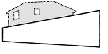

ContactoRegularizaciones, Ley del Mono, recepción definitiva y proyectos de arquitectura. Desde Santiago, con alcance a todo Chile.
Pide tu presupuesto sin costoSomos una oficina independiente de profesionales de la arquitectura, el área jurídica y técnicos, para ofrecer un servicio integral en proyectos de arquitectura, gestión y construcción.
Nos adaptamos a lo que cada proyecto necesita. Con base en Santiago, trabajamos a nivel nacional: llámanos o escríbenos por WhatsApp, correo o redes sociales.